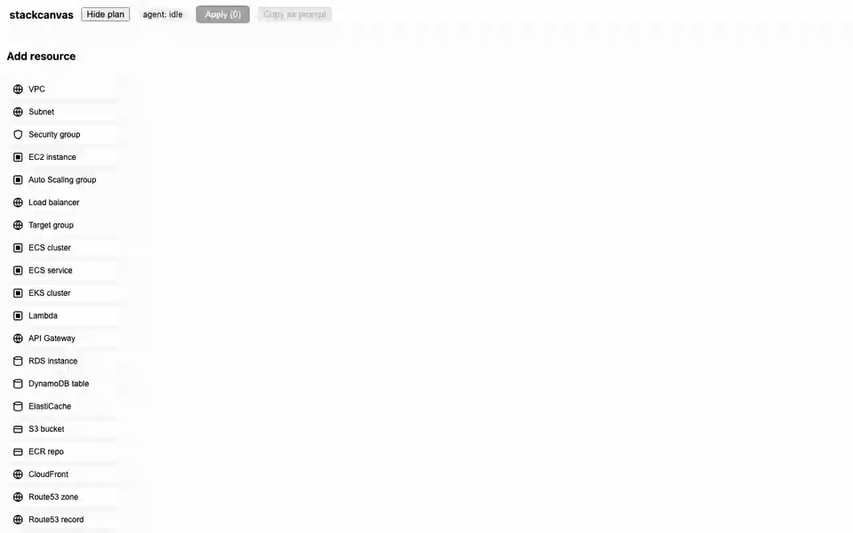

Your AI agent can change your infrastructure faster than you can read its diffs. stackcanvas is the missing supervision surface: a live local map of your Terraform estate where you see what the agent is about to do — and approve it — before it happens.
Agents made infra changes more frequent and each change less legible. A 400-line terraform plan hides the one thing that matters: what this change touches around itself. So you either slow the agent down — or rubber-stamp it.
stackcanvas is an MCP tool for Claude Code (works in any MCP client). It contains zero code generators — the agent you already pay for writes all the HCL, in your repo's style.
State changes on disk → the canvas redraws over WebSocket. Plan diffs render as color: create, update, delete, replace — with attribute-level detail in the inspector.
Drag a resource from the palette, pull an edge to a node, write a wish like small, no multi-AZ. Apply sends a strict intent — exact addresses, zero ambiguity — straight into the agent's loop.
The agent writes HCL, runs terraform plan, the canvas shows the diff. Only the agent executes, and only when you say so. There is no apply button in the UI — by design.

Every platform that can "show and steer" your infra wants your prod credentials in their cloud. stackcanvas structurally can't leak what it never has.
The server binds to localhost. Not "behind a login" — physically unreachable from outside. No cloud backend of ours exists.
It reads your local state and plan files. No AWS keys, no tokens, nothing to hand over, nothing to breach.
Everything Terraform marks sensitive becomes ••• inside the parser — before it ever reaches the UI.
The canvas proposes; your agent executes. MIT-licensed, open source, opt-in anonymous telemetry — fully documented.